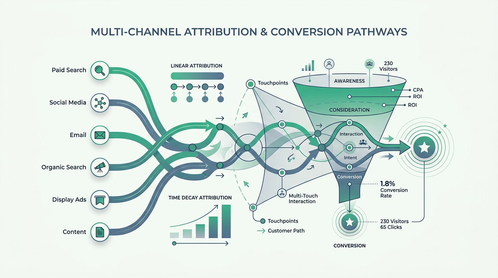

Attribution modeling in Google Analytics 4 (GA4) represents a foundational shift in how digital growth professionals analyze multi-channel performance. For performance marketing managers handling large budgets, attribution determines how ad spend credit is distributed across marketing touchpoints to evaluate true return on ad spend (ROAS).
Historically, digital marketing relied heavily on rules-based attribution models like Last-Click or First-Click. However, modern consumer journeys are complex. A user rarely discovers a brand and purchases instantly. They might find your business via an organic Google search, receive a retargeting ad on Instagram, click a promotional email, and finally convert via a direct search. Under old models, the email got all the credit. GA4's machine-learning-driven attribution solves this blind spot.
1. Understanding Data-Driven Attribution (DDA) in GA4
GA4's default attribution setting is **Data-Driven Attribution**. DDA uses machine learning algorithms to evaluate both converting and non-converting customer paths across your digital ecosystem. By comparing the paths of users who converted against those who did not, the algorithm determines the mathematical significance of each touchpoint.
For example, if the presence of a Meta Retargeting ad in a conversion path increases the probability of conversion by 22% compared to paths without it, DDA will attribute 22% of the conversion value to that specific Meta touchpoint. This is far more precise than giving 100% of the credit to the final click.
Key Variables DDA Analyzes:
- **Time to Conversion:** How much time elapsed between the ad click and the final transaction.
- **Device Type:** Tracks cross-device journeys (mobile click to desktop purchase).
- **Ad Format & Placement:** Evaluates if a Search ad, Video ad, or Display ad drove the highest incremental lift.
- **Touchpoint Order:** Identifies if a channel acts as a discoverer (top-of-funnel) or a closer (bottom-of-funnel).
2. Google's Retirement of Rules-Based Models
In mid-2023, Google officially announced the retirement of several classic rules-based attribution models in GA4, including **First Click, Linear, Time Decay, and Position-Based (U-Shaped)**. The decision was driven by the changing privacy landscape (such as the loss of third-party cookies) and the necessity of modeled data.
Static models use rigid, arbitrary formulas. For example, Time Decay always discounts earlier clicks in favor of later clicks. Linear always divides credit equally. Because these formulas do not adapt to real-world user behaviors, they fail to reflect actual business value. Now, GA4 restricts selections primarily to **Data-Driven Attribution** or **Last Click**.
3. Practical Application: The Model Comparison Tool
To make tactical budget decisions using attribution data, you must utilize the **Model Comparison Tool** in your GA4 dashboard (found under **Advertising > Attribution > Model Comparison**):
- **Compare Data-Driven vs. Last Click:** Select both models side-by-side. Look at your traffic channels (Paid Search, Paid Social, Organic, Email).
- **Identify undervalued channels:** If a channel like Paid Social shows a **+30% conversion value increase** in the Data-Driven model compared to the Last Click model, it means Paid Social is driving substantial brand discovery and middle-funnel value that Last Click misses. You should increase budgets here.
- **Identify overvalued channels:** Conversely, if Direct or Brand Search shows a **-20% drop** in value under Data-Driven, it indicates that while those channels claim the final click, they are not actually generating the initial demand. You can safely optimize budgets away from them without hurting total conversions.
Summary & Optimization Roadmap
To maximize your return, set your GA4 property's reporting attribution to Data-Driven. Perform a bi-weekly review using the Model Comparison tool to identify underperforming final-click channels that are actually driving crucial top-of-funnel interest, and adjust your ad budgets accordingly. By moving away from last-click measurements, you gain a accurate view of your cross-channel marketing and scale more profitably.
Frequently Asked Questions
How does GA4's Data-Driven Attribution model work?
GA4's Data-Driven Attribution uses machine learning to analyze both converting and non-converting paths. It evaluates how the presence of specific touchpoints affects conversion likelihood and dynamically distributes credit accordingly.
Why did Google retire First-Click and Time Decay models in GA4?
Google retired rules-based models because static math formulas fail to reflect complex, real-world user paths. Machine-modeled data (like Data-Driven Attribution) is more accurate and complies better with user privacy updates.
How can I compare conversion credit across different attribution models in GA4?
Use the Model Comparison Tool in the GA4 Advertising workspace. This tool allows you to compare Data-Driven attribution against Last Click to identify which channels are driving top-of-funnel discovery vs. closing conversions.